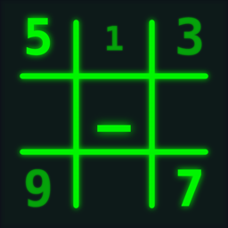

SudoSodoku
sudo solve — root access for logical purists.
iPhone · iOS 17.0+ · v2.0.0
root@ios:~$ sudo sudosodoku breach --master
[sudo] password for logic: ********
> generating_grid ......... [OK]
> uniqueness_check ........ [OK]
> difficulty_index ........ 84
> ACCESS GRANTED
root@ios:~$ █Pure logic. Zero noise.
Why SudoSodoku?
You're not filling numbers
You're breaching systems. The app is one continuous shell session — every screen a subcommand, every puzzle a live breach log, every victory an ACCESS GRANTED.
Nothing interrupts a deduction
No ads. No lives. No pay-to-win. No fail state — boards are finished or unfinished, never "lost". Even the timer is optional.
Earn your rank
A real ELO ladder with anti-smurfing, from SCRIPT_KIDDIE to THE_ARCHITECT. Leaderboards rank performance — never spending.
features
Grids grown, not stored
Every puzzle is generated in real time — unique solution, human-gradable, scored 0–100 by a logical solver. Never a canned database.
Four honest flags
--easy never dead-ends you, --hard is built around a fair "aha" and never demands guessing, --master resists intermediate techniques entirely.
Notes that think
Placing a digit sweeps it from peer pencil notes; undo restores everything as one move. The numpad strikes through exhausted digits.
A ladder worth climbing
ELO from 1200 with adaptive K-factor, six ranks, Game Center leaderboards, and eleven achievements — one of them secret.
Juice with respect
Mechanical-keyboard haptics, phosphor pulses, matrix-rain victories. Every animation respects Reduce Motion; sound is never forced on.
Yours, on device
No accounts, no tracking, fully playable offline. Your history lives in a single local file that never leaves your iPhone.
Found a bug in the system?
Report it — or read the source. SudoSodoku is free and open source under the MIT License, and contributions are welcome on our issue tracker.